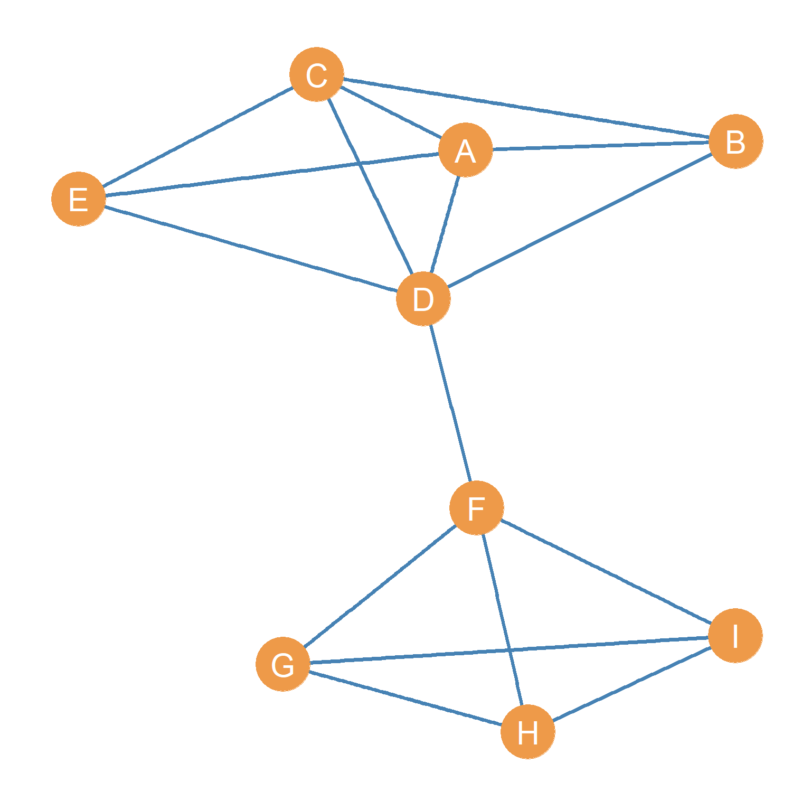

5 Types of Ties and Their Graphs
5.1 Symmetric Ties and Undirected Graphs
As noted in Chapter 3, Nodes and edges are indeed the building blocks of a graph. However, types of relationships that the edges represent can change both how we understand the network conceptually and also what mathematical techniques we can apply to the graph when we compute graph metrics (the subject of Chapter 6). The basic idea is that when we do network analysis, we want to map our understanding of the nature of the social relationships we are studying to the types of graphs we use to represent the network formed by the concatenation of those relationships (Martin 2009).
Let us assume that Figure 5.1 represents a network of people who spend time together. One way of building this network would be to ask people on your dorm room floor who are the people that they spend some amount of time (e.g., more than an hour a week) hanging out with. By definition the relation “spending time together” lacks any inherent directionality. Mutuality (or reciprocity) is built in by construction. It would be nonsensical for a person (say A) to claim that they spend time with another person (say B) and for B to say that they do not spend time with A. In social network analysis these types of ties are called symmetric ties (Heider 1946). So if \(AB\) means that A spends time with B if we know \(AB\) is true, then we know that \(BA\) is also true.
In the same way, two people being in the same place at the same time (co-location), even if they do not one another, is an example of a symmetric tie. You also have the symmetric tie “being in the same class as” every other student that is also taking your Social Networks seminar this term. Note that, in this sense, all co-memberships create symmetric ties among all actors involved (we will revisit this topic when talking about affiliation networks in Chapter 27). For instance, if I am a member of your family, you are also my family member; if we are both members of the soccer club, we are considered teammates.
Social networks composed of symmetric ties are represented using undirected graphs like the one shown in Figure 5.1. When an undirected graph has no loops (edges connecting a node to itself), and there is only one edge connecting adjacent vertices to one another (the graph has no multiedges), it is called a simple undirected graph.
Networks composed of symmetric ties have some interesting properties. If we know that the relationship (R) linking two nodes A and B is symmetric, then only a single edge exists that links them, and it does not matter whether we call this edge AB or BA. The order does not matter. In this way, we can formally define as symmetric tie as one that lacks directionality; if a tie is symmetric, then if we know that A is related to B (the AB edge is part of the edge set of the graph), then we know by necessity that B is related to A.
Can you think of other examples of symmetric ties? Is friendship, as culturally defined in the contemporary world, a symmetric tie?
5.2 Asymmetric Ties and Directed Graphs
In contrast to spending time together, being members of the same family, or being in the same place at the same time, some social ties allow for inherent directionality. Edges in these graphs are are called asymmetric ties (Heider 1946). That is, one member of the pair can claim to have a particular type of social relationship with the other, but it is possible (although not necessary) that the other person fails to have the same relationship with the first.
Helping or social support relations, are like this. For instance, you can help someone with their homework, or given them personal advice, but this does not necessarily mean that that person will return the favor. They may, or they may not. The point is that, in contrast to symmetric tie, mutuality or reciprocity is not built in by definition, but must happen as an empirical event in the world. We need to ask the other person to find out (or check their email logs). Can you think of other examples of asymmetric social ties?
Reciprocity is an important concept in social network analysis. Some have said it is perhaps the most important concept for understanding human society (Gouldner 1960), which may be a bit of an exaggeration. Only asymmetric ties may have the property of being non-reciprocal or having more or less reciprocity. If I think you are my friend, I very much hope that you also think you are my friend.
That said, sociologists have found that in many natural social settings this is not the case. Sometimes people think they are friends with others, but those other people disagree (Carley and Krackhardt 1996). For this reason, sociologists typically ask: if I do you a favor, would you do me a favor in the future? Additionally, sociologists often ask: if I treat you with respect, will you also treat me with respect? If I text you, will you text me back? If this is true, we have a level of reciprocity in our relationship.
For some ties, such advice or support, or friendship relations, reciprocity is all or none; it either exists or it does not. For instance, the friendship offer you extend to someone may be reciprocated (or not). In the same way, you can like someone and they may like you back (or not), like the notes you passed around in middle school. For other ties, such as communication ties (e.g., those defined by the amount of texting, or calling), reciprocity is a matter of degree, there may be more or less. For instance, you can text someone 10 times a day, but they may text you back only half of those instances. In all cases, reciprocity is at a maximum when the content of the relationship is equally exchanged between actors.
Can you think of relationships in your life characterized by more or less reciprocity?
Just like symmetric ties are represented using a particular type of graph (namely, an undirected graph), social networks composed of asymmetric ties are best represented by a type of graph called a directed graph (or digraphs for short). Figure 5.2 shows the point and line diagram picture of a digraph. What were simple lines for in the undirected graph shown in Figure 5.1 have been replaced with arrows indicating directionality.
A node sends a relationship to the node that the arrow points to, which in turn receives the relationship. In a digraph, up to two directed arrows may link nodes going in both directions. When an undirected graph has no loops (edges connecting a node to itself), and there is only one edge connecting a sender node to a receiving node (the graph has no multiedges) like Figure 5.2, it is called a simple directed graph.
In a directed graph, for every edge, there is a source node and a destination node. So in the case of “A helps B” the source node is A and the destination node is B. In the case of “B helps A” the source node is B and the destination node is A. This means that in a directed graph, in contrast to a undirected one, the order in which you list the nodes when you name the edges matters. Thus, the edge AB is a different one from the edge BA. The first one may exist but the second one may not exist (edges in a directed graph are sometimes also called arcs).
For instance, if Figure 5.2 were an advice network (Cross, Borgatti, and Parker 2001), on the other hand, we could say that H seeks advice from D, but D does not seek advice from H. This may be because D is higher in the office hierarchy or is more experienced than H, in which case lack of reciprocity may be indicative of an authority relationship between the two nodes.
One must always be careful when examining a directed network to make sure one properly understands the direction of the underlying social relationships!
5.2.1 Types of Nodes in Directed Graphs
In a directed graph, there will typically be three types of (non-isolate) nodes (Harary, Norman, and Cartwright 1965):
- First, there will be nodes that receive ties but don’t send them. These are called receivers (like node C in Figure 5.2). For receiver nodes \(k_{in} > 0\) and \(k_{out} = 0\).
- Second, there will be nodes that receive ties and also send out ties. These are called carriers (like nodes A and B in Figure 5.2. For carrier nodes, \(k_{in} > 0\) and \(k_{out} > 0\).
- Finally, there will be nodes that send ties but don’t receive them. These are called transmitters (like nodes E and G in Figure 5.2). For transmitter nodes, \(k_{in} = 0\) and \(k_{out} > 0\).
5.3 Anti-Symmetric Ties and Tree Graphs
There is a particular type of directed relationship that has the property of only going in one direction. These are called anti-symmetric ties. Like asymmetric ties, anti-symmetric ties have a directionality (and thus source and destination nodes), but reciprocity is forbidden by definition. That means that if A is anti-symmetrically connected to B, then B cannot send the same type of tie back to A.
Although not a particularly important social relationship, being taller than someone is an anti-symmetric tie. If you are taller than someone else, they cannot be taller than you. If you are taller than someone else, that means that the link “being taller than” has you as the source and the person that you are taller than as the destination, but it can never go the other way around. However, if some else is taller than you, then that link will have them as the source and you as the destination.
More sociologically interesting types of anti-symmetric links in social networks include authority relations such as hierarchical ties at work, or cross-generational relations like kinship ties in families. For instance, the authority relation gives orders to can only go in one direction. Imagine an organization where the boss tells you what to do and you in turn told your boss what they should do. It would be pretty anarchic. In the kinship ties domain, the relationship being the parent of is a classic anti-symmetric tie. If you are the parent of someone they cannot, in turn, be your parent.
Usually anti-symmetric links in social networks have a complementary relationship that is also anti-symmetric, but that goes in the other direction. Note that this is not an exception to the rule that anti-symmetric ties go only one way, because the complementary relationship is a different tie. For instance, the complement of the relationship “gives orders to” or “is the boss of” is the relationship “takes orders from” or is “the subordinate of” in the authority ranking domain. In the family domain the complement of the relationship “is the parent of” is, of course, “being the son/daughter of.” Just like the original anti-symmetric link, if you are someone’s son or daughter, then they cannot also be your son or daughter.
There is a special kind of anti-symmetric link than when concatenated across multiple ties, creates a special kind of graph called a tree graph. Consider the relationship “being the father of.” You have a father, and your father has a father, and they have a father. Such a generational tree creates a graph like the one shown in Figure 5.3. In this figure, node \(A\) is the earliest common ancestor and the other nodes are anti-symmetrically related to him via the “father of” relation (we could draw a similar graph for the “mother of” relation among women).
In the authority relations case we could also draw a similar graph for the “takes direct orders from” or “is the direct supervisor of” relation. An interesting thing about a tree graph like the one shown in Figure 5.3 is that every node only has one in-neighbor (you only have one father/mother) but can have multiple out-neighbors (a father/mother can have multiple children).
References
Carley, Kathleen M, and David Krackhardt. 1996. “Cognitive Inconsistencies and Non-Symmetric Friendship.” Social Networks 18 (1): 1–27.
Cross, Rob, Stephen P Borgatti, and Andrew Parker. 2001. “Beyond Answers: Dimensions of the Advice Network.” Social Networks 23 (3): 215–35.
Gouldner, Alvin W. 1960. “The Norm of Reciprocity: A Preliminary Statement.” American Sociological Review, 161–78.
Harary, Frank, Robert Z Norman, and Dorwin Cartwright. 1965. Structural Models: An Introduction to the Theory of Directed Graphs. Wiley.
Heider, Fritz. 1946. “Attitudes and Cognitive Organization.” The Journal of Psychology 21 (1): 107–12.
Martin, John Levi. 2009. Social Structures. Princeton University Press.